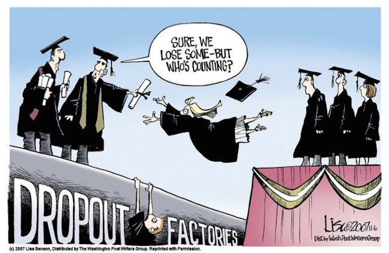

Design And Develop An Ai-Powered Chatbot For The Technical Education Department
The Technical Education Department is faced with a growing demand for information, support, and guidance from students, educators, and stakeholders.
This demand includes inquiries about courses, admission processes, curriculum updates, scholarship details, and more.
To efficiently address this increasing demand and provide timely assistance, there is a need to create an AI- powered chatbot tailored to the specific needs of the Technical Education Department.
This chatbot should serve as a virtual assistant capable of handling a wide range of queries, thereby enhancing accessibility to vital
Problem Statement 2
Continuous Curriculum Improvement System For Higher Education
Moore’s law has given significant insight into development of technology in modern times, which has a direct impact on lives of people at various level in terms of employment.
Due to this phenomenon continuous skill empowerment and updation in curriculum is necessary for keeping pace with current times.
Lack of skills is a significant issue amongst graduates which is in turn hampering their chances of getting employed.
Also, this issue is correlated with un-updated curriculam through which they go through. We need to identify the core areas for skill and curriculum updation in a dynamic manner across all streams of education. This must be done keeping in mind various levels of student’s viz. students of agricultural background, technical and non-technical background etc.
Also, the place from where student is coming be it Tier-II/III or any other kind of geographies.
Problem Statement 3
Dropout Of Students In Higher Education

While government is launching various schemes for student welfare and career enhancement in various fields still there is rise in number of dropout rate of students in higher education.
This seems to be a counterintuitive phenomenon. Our interest is in finding out the reasons for higher dropout rates amongst students and ways to reduce it.
Also, what do students usually do after leaving there studies. Do they achieve their interest by dropping college studies?
Problem Statement 4
A Qualitative And Quantitative Analysis Of The Unemployment Of Graduates
After graduating from higher educational institutions students are facing unemployment and usually go to various training institutes who promise them training and employment.
One needs to take a deep dive into the matter analysing why this phenomenon has taken so much momentum and find out the gaps in the system responsible for such an occurrence employing various qualitatively and quantitatively methods.
Problem Statement 5
Inventory Manangement System
The departement has many branches and these branches have requirement of various types of material like stationaries and.
This material is procured by store section of the department through Gem portal on regular basis. The demand request for the items are put up by branches to the store section maually.
So a system is required to make this entire activity online with support of Inventory management of this items.
The system should also generate reports of consumption of items branchwise as well as employee wise.